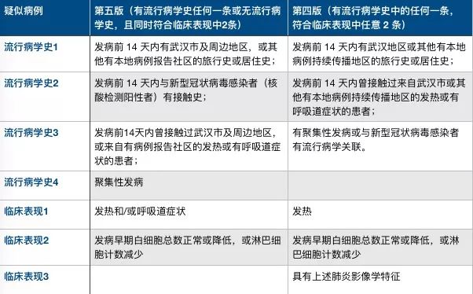

武汉“四类人员”集中收治第一日：“我们没有被抛弃！”
原文链接 备份链接 在医学专家们看来，集中收留、隔离是第一步。接下来对疑似病患的确诊、分类诊治、收治入院，将是对医疗、物资、人员分配等多重资源配置能力的综合考验，相信各方面群策群力可以渡过难关 文 |《财经》 …
06.02.2020

本文字数：4302，阅读时长大约7.5分钟
导读：一周时间，武汉新增病例5.5倍增长，累计病例增长3.69倍。
作者 | 第一财经 马晓华 胥会云
武汉封城之后，湖北以外的各省份对新型肺炎展开了“追捕”，以点带面地扑灭疫情。 但在武汉城内，防控升级的同时疫情却依然逆行而上、扩散蔓延。
2月4日0时-24时，武汉新增1967例，而在7天前（1月29日），武汉的新增病例是356例。一周时间，单日新增病例5.5倍增长。截至2月4日24时的累计病例为8351例，是1月29日24时累计病例（2261例）的3.69倍。
根据中国疾控中心主任高福等专家的研究，新型肺炎的病例规模每7.4天增加一倍，由一人传染到另外一人的平均间隔时间为7.5天，基本再生数（R0）估计为2.2。
显然，武汉已经严重超速了。当下，武汉如何才能硬生生地摁住严峻的疫情走势？如何解决病床、医护人员紧缺以及提高诊断速度，是武汉面临的三个最大挑战。

我想去打点滴
“我想去住院打点滴，现在只有躺着舒服点，活动起来就特别憋闷。在这个房间里，也不敢出去，他们每天送饭过来，不管是什么饭，我都吃。我在想，多吃点，身体抵抗力就会好一点。”2月5日，在光谷二路城市快捷酒店隔离的50岁的张女士对第一财经记者表示。
这里是社区安置的隔离点，2月4日晚上，张女士被社区通知要去隔离。
这几天，张女士的生活发生了巨大的变化：2月4日，她的母亲在医院排队等待病床的时候停止了呼吸。在母亲去世的前一天（2月3日），张女士的父亲先走了。
“我的父母、弟弟和我都咳嗽。1月31日，我和弟弟都做了CT检测，疑似，让我们在家隔离，父亲去世后，母亲也不行了，我打了120，社区的车把我母亲送在医院就走了，然后我母亲就在医院排队等床位，可是最终也没有等到。”张女士表示。
父母双双离去后，张女士陷入了恐惧。
“我只是想去医院，得到一点专业的治疗。可之前因为没有核酸检测结果，医院不能治疗。我去同济医院的分院做了核酸检测，结果还没有出来，所以我现在还在等。女儿说结果今天能出来，需要48个小时。”张女士在期待她的核酸检测结果，一旦拿到这个结果，她就有望到医院去治疗了。
张女士说现在她自己在买药吃，“有人说拜复乐很好，于是找人去协和开了这个药，药劲大，吃完感觉见轻了。”她还是看到了一点希望。
类似张女士这样家庭聚集性感染的患者，在武汉并不少。医院没有床位、不能及时做核酸检测，自行回家隔离，成为这种家庭聚集性感染的诱因，也使得武汉的确诊病例数量完全滑出了新型冠状病毒基本再生数（R0）的轨道。
中国工程院副院长、呼吸与危重症医学专家王辰2月5日在《新闻1+1》节目中表示，武汉形势严峻，大批患者没有及时收治到医院里来，这是面临的一个很大的压力，这批患者在社会上的流动，在家庭中的居住，会造成更进一步的家庭和社区的感染，这是加剧疫情的最重要因素。
“现在需要把防控措施跟上，赶紧把病压下去。”一位流行病学专家表示。
放宽疑似病例标准
对于武汉的这种态势，武汉市人大常委会主任、市委副书记胡立山用了“堰塞湖”一词来描述。
2月5日晚的湖北省新闻发布会上，胡立山说，“说真的我们感到很痛苦，我们自己感觉很揪心，很痛苦，也是我们已经确诊以及还有很多疑似的病人没有得到很好的救治，没有住进我们指定医院，实际这里面形成一个供需矛盾以后，形成一个堰塞湖，这是存在的。”
王辰表示，现在武汉到底有多少病人并不是十分清楚，我们期望病例数不多于现在所设计的一两万张的方舱医院的床位数，但如果社区的交叉感染不制止的话，还是一个未定数，因此现在最关键的就是要能收尽收的把作为传染源的病人尽量收治到医院来，进而降低家庭和社区的传播，从而使整体疫情趋于下降。
因此，要解决”堰塞湖”的问题，武汉首先需要尽快、全面控制传染源。
举措之一，就是在2月5日国家卫健委发布的新型肺炎诊疗方案（试行第五版），做了一个重要的调整：放宽了湖北省内疑似病例的标准：
一是从原来的符合发热症状，调整为符合“发热和/或呼吸道症状”。二是在“疑似病例”和“确诊病例”之间，增加了“临床诊断”分类。除了符合“发热和/或呼吸道症状”以外，临床表现减少为——“发病早期白细胞总数正常或降低，或淋巴细胞计数减少”，便可考虑为疑似病例。而疑似病例，如果具备被去掉的另外一条临床表现——“具有肺炎影像学特征者”，则为临床诊断病例。
这也意味着，接下来湖北省的疑似病例将会有一定幅度的上升。

▲湖北省疑似病例标准的变化
堰塞湖泄洪将全面暴露感染源
对于疑似标准的变化，在5日下午的新闻发布会上，国家医疗专家组成员、北京地坛医院感染性疾病诊疗与研究中心首席专家李兴旺回应称，对疑似病例的标准增加了“发热或有呼吸道症状”，意思是对于临床表现比较轻，但是也具有流行病学史的病人不能放过，目的也是为了早期发现病人，早期诊断、早期隔离治疗。
“至于是否会增大疑似病例的数量，我想有可能会增加，但是如果能够及早把这部分不太典型的病例搜索出来，对于控制疫情、控制传染源也是很有好处的。”李兴旺认为。
同时，在临床分型中，诊疗方案第五版也增加了一个“轻型”。从原来的普通型、重型、危重型，调整为轻型、普通型、重型和危重型。其中轻型是指临床症状轻微，影像学未见肺炎表现。
李兴旺表示，随着检测能力的提高，发现新型冠状病毒感染肺炎不仅有肺炎的表现，有一部分病人表现比较轻，没有肺炎，具体讲就是这部分病人有发热，有中低热、轻微乏力，偶尔有干咳，病程史中没有肺炎，这部分病人虽然病情轻，但是仍然具有传染性。
“在诊断分型中，我们把这一型加在里面，第一是为了把这部分病人进行隔离治疗，目的是为了更好的控制传染源。”
泄洪后
病床、医护人员紧缺
一方面是让可能的感染源全面暴露，另一方面，武汉也必须加快分类集中收治的速度。
目前，武汉正在对“四类人员”（确诊患者、疑似患者、无法排除感染可能的发热患者、确诊患者的密切接触者）分类集中收治。
其中，对确诊患者集中收治，重症送定点医院，轻症送指定医院和其他医疗机构；疑似患者在发热门诊留观的，继续留观；因床位不够不能留观的，由所在区转至指定的集中隔离点；经发热门诊CT诊断的有肺炎症状但暂时无法明确排除的发热患者，由所在区送有一定医疗条件的机构集中隔离治疗，与疑似患者分开隔离，防止交叉感染；对确诊患者密切接触者进行排查，并参照发热患者对他们进行集中观察后居家隔离。
要解决因为无法收治而导致的“堰塞湖”，武汉需要解决病床。但是，毫无疑问，武汉的病床供需矛盾比较突出。
胡立山说，目前武汉28家定点医院的病床共8254张，现在住在医院的有8182个人。武汉2月4日确诊的病例2000多例，疑似病例780多例，加起来有2700多例。但加上出院，空的病床昨天是421张。
为了减少“堰塞湖”的危害，武汉正在做四件事：一是要求28家定点医院内部挖潜，加速病床周转，尽快提升出院率。另外轻症病房多加床。二是集中破解危重病人这个难题，采取“5+2”的办法，确定5家定点医院专门收治危重病人，同时加速火神山和雷神山建设。
第三件事，胡立山说，就是方舱医院的建设。目前已经建设的武汉国际会展中心、洪山体育馆、武汉客厅3个方舱医院，加起来4400张病床。“据我了解晚上10点左右，我们武汉国际会展中心就会开始接收病人，这就是把我们确诊的轻症的患者要削减掉。同时我们也要求各个区要想办法，利用好自己的体育馆场所或者学校，来建类似这样的方舱医院，收治轻症病人，把这个轻症问题削减掉。”
第四件事情，胡立山说，就是要挖掘社会资源，对于疑似病人、发热患者、密切接触者来分类集中隔离观察。
武汉征收征用民营医院，酒店，党校，学校等场所，作为区集中隔离点，用于肺炎症状患者，密切接触者集中隔离观察。截止到2月4号24点，共有132个区的集中隔离点，有床位12571张，集中隔离各类人员5425人。
胡立山说，区里集中隔离点还成立了专班，按照疑似病人、发热患者、密切接触者来分类集中隔离观察。“这一点上我们想还要提前思维，现在要求各区筹措更多学校，酒店，体育中心作为我们下一步的集中隔离场所。”
“我们用这几个办法，力争把我们的堰塞湖给削减掉。”胡立山说。
扩大收治、增加病床的背后，紧随而至的，便是医护人员的缺口。
目前武汉不仅在建医院，也在改造医院，同时还加大开放三甲医院的床位，这一切都需要医护人员。
2月4日，武汉市决定在中国光谷科技会展中心、武汉体育中心、武汉国际博览中心等地再建“方舱医院”，用于收治新型冠状病毒感染的肺炎轻症患者。
据当地媒体消息，除了上述6个方舱医院外，武汉市江岸、硚口、洪山、江夏区、青山等城区还将再建“方舱医院”，预计有11家方舱医院建立，专门收治新型冠状病毒肺炎感染的轻症患者。
相关人士表示，随着这批方舱医院的建成，收治能力将大大提高，一定程度上缓解武汉病人不能集中隔离收治的状况。
“收治能力是大了，可人哪里来？每20个病人需要1个医生2个护士，三班倒，一个1000张床位的方舱医院，就需要450个医护人员。可我们这里，社区医生已经都在一线了，还有些医生过春节前回去，就没有再进来。我们只能把一些退休的医护人员召回来，但是传染病的防控需要专业培训，不是每个人医护都能做的了。所以未来缺口还很大。”武汉市当地区域的行政人员对记者说。
今后，随着更多“方舱医院”开建以及集中隔离点的增加，它们将构成武汉阻击疫情的一道道防线，让疑似和轻症患者第一时间被隔离、被收治，但是医护人员短缺的问题将日渐凸显。
诊断速度不能再拖后腿
扩大收治和隔离，不仅对床位和医护人员造成压力，在诊断能力上也挑战着武汉。
国家工信部总工程师田玉龙在3日在国务院新闻办发布会上说，2月1日试剂盒日产量已达到77.3万人份，是可以保障需求的。
一直被怀疑诊断试剂不足的情况，被工信部的数字证实不缺。但为何还有那么多人不能及时得到检测？
“现在只有19家大医院和几家第三方检测机构可以做核酸诊断，不是所有的医疗机构的发热门诊都能做检测。而且检测结果需要两天才能出来。”武汉市的一位医生表示。
只能回家等待两天的患者，给病毒制造了传播的机会。
“在很多门诊，由于没有办法检测，做了CT后，会让他们再去大医院做核酸检测，需要跑两趟医院。”上述医生表示。
核酸诊断试剂的分布不均给及时发现患者带来了困难。“刚开始时，诊断需要在p3级别的实验室进行，所以患者样本需要送到有条件的检测机构来检测，不过现在诊断试剂已经改进，在P2级别的医院检测室就可以做了。一个样本检测需要3个小时。”一位病毒学家表示。
但是在武汉，目前并不是每个发热门诊都能第一时间检测，结果还需要等待2天。
未来也许会有改变，一些正在紧急报批的诊断试剂产品将使大规模快速筛查疑似患者成为可能。
【推荐阅读】


原文链接 备份链接 在医学专家们看来，集中收留、隔离是第一步。接下来对疑似病患的确诊、分类诊治、收治入院，将是对医疗、物资、人员分配等多重资源配置能力的综合考验，相信各方面群策群力可以渡过难关 文 |《财经》 …
原文链接 备份链接 武汉市各区正在加紧把所有发热人员集中隔离，并进行全部发热人员的检测，目的是让疫情全部暴露出来，之后疫情防控也将从“攻坚战”转至“歼灭战” 图/法新 文 |《财经》特派武汉记者 言清 王小 编辑 | 王小 “今天的会非 …
原文链接 备份链接 在医学专家们看来，集中收留、隔离是第一步。接下来对疑似病患的确诊、分类诊治、收治入院，将是对医疗、物资、人员分配等多重资源配置能力的综合考验，相信各方面群策群力可以渡过难关 2月3号上午8点，人们在七医院门口排队等待核 …
原文链接 备份链接 第一财经记者 | 马晓华 原文首发于：第一财经旗舰App 封城至今，在抗击疫情的紧张战役中，暴风眼中的武汉难免有些手忙脚乱。 一方面是医疗物资紧缺，口罩、防护服、护目镜的求援信息在网络上蔓延；一方面是医护资源紧缺，一 …
原文链接 备份链接 非常时期，武汉成了全国人民挂念、祈福的城市。封城后，武汉人民的真实生活是什么样？ 正和岛自1月26日起特别推出《叶青：我在武汉疫区的第N天》专栏。叶青是一位定居武汉40年的市民，也是一名学者和官员。接下来的一段时间，他 …